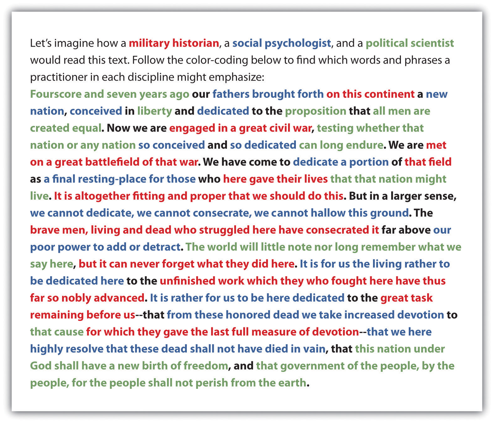

3.3 Articulating Multiple Sides of an Issue
Learning Objectives
- Explore how to recognize binary oppositions in various disciplines.
- Learn the value of entertaining two contradictory but plausible positions as part of your thinking, reading, and writing processes.
- Appreciate the productive, constructive benefits of using disciplinary lenses and borrowing from other disciplines.
Regardless of the discipline you choose to pursue, you will be arriving as an apprentice in the middle of an ongoing conversation. Disciplines have complicated histories you can’t be expected to master overnight. But learning to recognize the long-standing binary oppositionsA set of two opposite ways of looking at the world. in individual disciplines can help you make sense of the specific issues, themes, topics, and controversies you will encounter as a student and as a professional. Here are some very broadly stated examples of those binary oppositions.
These binary oppositions move freely from one discipline to another, often becoming more complicated as they do so. Consider a couple of examples:
- The binary opposition in the natural and applied sciences between empiricism (the so-called scientific method) and rationalism (using pure reason to speculate about one’s surroundings) originated as a debate in philosophy, a branch of the humanities. In the social sciences, in recent years, empirical data about brain functions in neuroscience have challenged rationalistic theories in psychology. Even disciplines in business are using increasingly empirical methods to study how markets work, as rationalist economic theories of human behavior increasingly come under question.
- The binary opposition between text and context in the humanities is borrowed from the social sciences. Instead of viewing texts as self-contained creations, scholars and artists in the humanities began to appreciate and foreground the cultural influences that helped shape those texts. Borrowings from business disciplines, such as economics and marketing, furthered the notion of a literary and artistic “marketplace,” while borrowings from the natural and applied sciences helped humanists examine more closely the relationship between the observer (whether the critic or the artist) and the subject (the text).
Of course, these two brief summaries vastly oversimplify the evolution of multiple disciplines over generations of intellectual history. Like the chart of binary oppositions, they’re meant merely to inspire you at this point to begin to note the connections between disciplines. Learning to think, write, and function in interdisciplinary ways requires practice that begins at the level of close reading and gradually expands into the way you interact with your surroundings as a college student and working professional.
For a model of how to read and think through the disciplines, let’s draw on a short but very famous piece of writing (available through the Avalon Project in the Note 2.5 "Gallery of Web-Based Texts"), Abraham Lincoln’s “Address at the Dedication of the Gettysburg National Cemetery,” composed and delivered in November of 1863, several months after one of the bloodiest battles in the American Civil War.

- A military historian (red passages) might focus on Lincoln’s rhetorical technique of using the field of a previous battle in an ongoing war (in this case a victory that nonetheless cost a great deal of casualties on both sides) as inspiration for a renewed, redoubled effort.
- A social psychologist (blue passages) might focus on how Lincoln uses this historical moment of unprecedented national trauma as an occasion for shared grief and shared sacrifice, largely through using the rhetorical technique of an extended metaphor of “conceiving and dedicating” a nation/child whose survival is at stake.
- A political scientist (green passages) might focus on how Lincoln uses the occasion as a rhetorical opportunity to emphasize that the purpose of this grisly and grim war is to preserve the ideals of the founders of the American republic (and perhaps even move them forward through the new language of the final sentence: “of the people, by the people, for the people”).
Notice that each reader, regardless of academic background, needs a solid understanding of how rhetoric works (something we’ll cover in Chapter 4 "Joining the Conversation" in more detail). Each reader has been trained to use a specific disciplinary lens that causes certain passages to rise to prominence and certain insights to emerge.
But the real power of disciplines comes when these readers and their readings interact with each other. Imagine how a military historian could use social psychology to enrich an understanding of how a civilian population was motivated to support a war effort. Imagine how a political scientist could use military history to show how a peacetime, postwar governmental policy can trade on the outcome of a battle. Imagine how a social psychologist could use political science to uncover how a traumatized social structure can begin to heal itself through an embrace of shared governance.
As Lincoln would say, “It is altogether fitting and proper that we should do this.”
Key Takeaways
- Disciplines have long-standing binary oppositions that help shape the terms of inquiry.
- To think, read, and write in a given discipline, you must learn to uncover binary oppositions in the texts, objects, and phenomena you are examining.
- Binary oppositions gain power and complexity when they are applied to multiple disciplines.
Exercises
- Following the Gettysburg Address example at the end of this section, use three disciplinary lenses to color-code a reading of your choice from the Note 2.5 "Gallery of Web-Based Texts" in Chapter 2 "Becoming a Critical Reader".
- Find a passage in one of the textbooks you’re using in another course (or look over your lecture notes from another course) where the main discipline appears to be borrowing theories, concepts, or binary oppositions from other disciplines in order to produce new insights and discoveries.
- Individually or with a partner, set up an imaginary two-person dialogue of at least twenty lines (or two pages) that expresses two sides of a contemporary issue with equal force and weight. You may use real people if you want, either from your reading of specific columnists at Arts and Letters Daily or of the essayists at the Big Questions Essay Series (see the Note 2.5 "Gallery of Web-Based Texts" in Chapter 2 "Becoming a Critical Reader"). In a separate memo, indicate which side you lean toward personally and discuss any difficulty you had with the role playing required by this exercise.
- Show how one of the binary oppositions mentioned in this section is expressed by two writers in a discipline of your choosing. Alternatively, you can come up with a binary opposition of your own, backing it up with examples from the two extremes.
- Briefly describe how an insight or discovery applied past disciplinary knowledge to a new situation or challenge. How might you begin to think about addressing one of the contemporary problems in your chosen discipline?